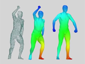

Fast and Accurate Clothing Simulation
The trillion-dollar fashion industry deeply influences our lives everyday. Being able to efficiently and accurately simulate clothing will not only broaden graphics applications, but also have a great potential to revolutionize the whole fashion industry, from design to retailing. My research team is one of the leading teams in this field worldwide. My work on cloth dynamics solvers has already been covered previously. In this section, I will summarize my additional work focused on cloth collisions and contacts.
GPU-based continuous collision detection
Compared with self-collisions of deformable solids, self-collisions of cloth are much more complex. Existing cloth simulators often use the continuous collision detection (CCD) technique, which is difficult to be developed with efficiency and accuracy. Since false negatives are more critical than false positive, researchers suggested the use of error bounds to avoid false negatives caused by numerical errors. But then how to determine error bound values becomes a dilemma: smaller values may not sufficiently eliminate false negatives, while bigger values will cause too many false positives.
To address this issue, I systematically analyzed the errors occurred in CCD and derived an error bound estimation scheme to strictly ensure the safety of CCD for the first time, without using expensive exact arithmetics.
To further reduce the collision cost, my colleagues and I recently studied the development of an end-to-end simulation system that exploits GPU parallelism for time integration, collision detection, and collision handling.
This system has already demonstrated its high performance on the GPU and it is expected to serve as the foundation for future graphics research in this direction.
Cloth contact mechanics
The second topic I am interested in is how to handle collisions and contacts, once they get detected.
My research team studied the data-driven approach for modeling complex cloth friction effects, and invented a fast algorithm for animating air trapped within multiple cloth layers.
For virtual fitting room applications, we investigated fast detection and handling of collisions between virtual clothing and human bodies, and automatic human body posing from point cloud data.
Although the clothing simulation research still has a long way to go, our team is making solid research progress and our contributions are expected to play an important role in the success of fashion-related applications in the future.
RELATED PUBLICATIONS
Min Tang,
Huamin Wang,
Le Tang,
Ruofeng Tong and
Dinesh Manocha. 2016.
[PDF 2.5MB]
[MP4 in H264, 62MB]

Tamal K. Dey, Bo Fu, Huamin Wang and Lei Wang. 2015.
[PDF 11.5MB]
[Slides in PPTX, 7.7MB]
[MP4 in H264, 9.2MB]
 Huamin Wang. 2014.
Huamin Wang. 2014.
[PDF 2.0MB]
[Supplemental PDF 0.1MB]
[MP4 in H264, 44MB]
[Code in C++]
 Mao Ye, Huamin Wang, Nianchen Deng, Xubo Yang and
Ruigang Yang. 2014.
Mao Ye, Huamin Wang, Nianchen Deng, Xubo Yang and
Ruigang Yang. 2014.
[PDF 1.6MB]
[MP4 in H264, 39MB]
 Zhili Chen,
Renguo Feng and Huamin Wang.
2013.
Zhili Chen,
Renguo Feng and Huamin Wang.
2013.
[PDF 6.4MB]
[MP4 in H264, 130MB]
[Friction data in PDF 190KB]